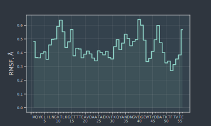

RMSD/RMSF
import os from pyxmolpp2 import calc_rmsd, calc_alignment, PdbFile, aName, Atom import numpy as np
Let's create a frame to work with
pdb_filename = os.path.join(os.environ["TEST_DATA_PATH"], "pdb/rcsb/5BMG.pdb") pdb_file = PdbFile(pdb_filename) frame = pdb_file.frames()[0]
Number of residues in molecules must be same (strip water, ions, etc.)
N = 0 for mol in frame.molecules: if mol.size != frame.molecules[0].size: break N += 1
Print RMSD matrix for all deposited chains:
print(' '.join([" " * 6] + [f"{i:5d}" for i in range(N)])) for i in range(0, N): chain_i_ca = frame.molecules[i].atoms.filter(aName == "CA") print(f"{i:-5d}:", end=" ") for j in range(0, i + 1): chain_j_ca = frame.molecules[j].atoms.filter(aName == "CA") alignment = chain_i_ca.alignment_to(chain_j_ca) crd = chain_i_ca.coords.values.copy() crd = (crd @ alignment.matrix3d().T) + alignment.vector3d().values rmsd = calc_rmsd(chain_j_ca.coords.values, crd) print(f"{rmsd:5.1f}", end=" ") print("")
0 1 2 3 4 5 6 7
0: 0.0
1: 0.4 0.0
2: 0.4 0.4 0.0
3: 0.4 0.4 0.3 0.0
4: 0.4 0.3 0.3 0.3 0.0
5: 0.3 0.4 0.3 0.4 0.4 0.0
6: 0.3 0.4 0.3 0.4 0.3 0.4 0.0
7: 0.4 0.4 0.3 0.3 0.3 0.3 0.4 0.0
Calculate RMSF per residue
first_mol_ca = frame.molecules[0].atoms.filter(aName == "CA") # initialize average coordinates with (0,0,0) avg_coords = np.zeros((first_mol_ca.size, 3)) # calculate average coordinates across N frames for mol in frame.molecules[:N]: chain_i_ca = mol.atoms.filter(aName == "CA") chain_i_ca.coords.apply(chain_i_ca.alignment_to(first_mol_ca)) avg_coords += chain_i_ca.coords.values avg_coords /= N # align to average coordinates for mol in frame.molecules[:N]: chain_i_ca = mol.atoms.filter(aName == "CA") chain_i_ca.coords.apply(calc_alignment(ref=avg_coords, var=chain_i_ca.coords.values)) # calculate per residue RMSF import numpy as np rmsf = np.zeros((first_mol_ca.size,)) for mol in frame.molecules[:N]: chain_i_ca = mol.atoms.filter(aName == "CA") for k, a in enumerate(chain_i_ca): rmsf[k] += np.linalg.norm(a.r.values - avg_coords[k]) rmsf = np.sqrt(rmsf / N)
Now we can plot RMSF
import matplotlib.pyplot as plt from matplotlib.ticker import Formatter, IndexLocator plt.style.use(MCSS_MPL_DARK) plt.figure(figsize=(5, 3)) plt.step(range(len(rmsf)), rmsf, where="mid") plt.fill_between(range(len(rmsf)), rmsf, step="mid", alpha=0.1) plt.ylabel("RMSF, $\AA$") plt.grid(color="#CCCCCC", lw=0.1) class ResidueFormatter(Formatter): def __call__(self, x, pos=None): from Bio.PDB.Polypeptide import three_to_one if x < 0 or x >= first_mol_ca.size: return '' a = first_mol_ca[int(x)] if a.residue.id.serial % 5 == 0: return "%s\n%d" % (three_to_one(a.residue.name), a.residue.id.serial) else: return "%s" % (three_to_one(a.residue.name)) plt.gca().xaxis.set_minor_locator(IndexLocator(base=1, offset=-1)) plt.gca().xaxis.set_major_locator(IndexLocator(base=5, offset=-1)) plt.gca().xaxis.set_minor_formatter(ResidueFormatter()) plt.gca().xaxis.set_major_formatter(ResidueFormatter()) plt.gca().tick_params(axis='both', which='both', labelsize=6) plt.gca().tick_params(axis='both', which='minor', pad=4, length=2) plt.gca().tick_params(axis='both', which='major', pad=2, length=4)
